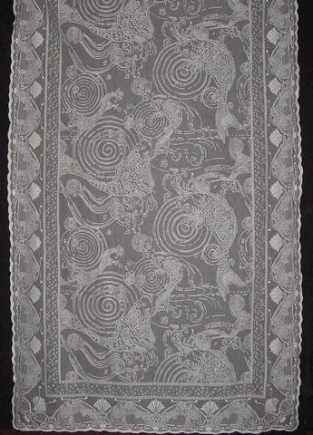
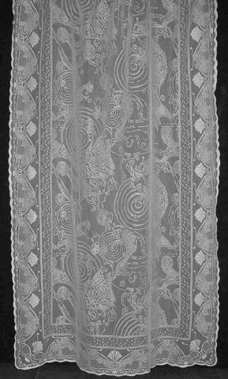

|
 |
Japanese Carp Lace Curtains Our finest weave, this 14-point lace has exceptional delicacy in the weight of the fabric and in the design. The pattern is adapted from the Candace Wheeler printed fabric of the same motif. Available sizes: Lace Panels: Shower Curtain: Colors (product codes) Fabric Content: 95% cotton/5% polyester *All sizes are approximate, with a 3% allowable variance. |
|
 |
Go to Scottish Lace Curtains Page
Go to Burrow Studio Design List
How to Order Our Lace Curtains
Go to J.R. Burrows & Company Main Page